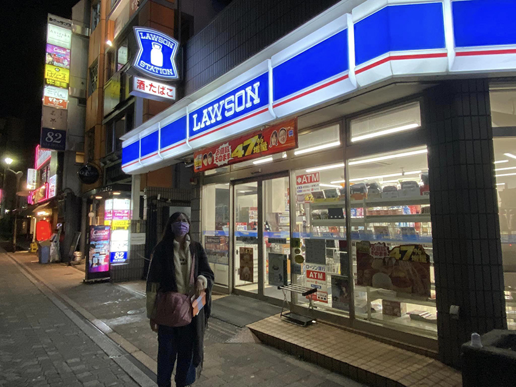

今年農曆年過後，16歲的大女兒說日本有一場舞台劇演出今年取消網路直播，因為已不受COVID-19疫情影響，國境的班機又開始每天熱鬧滾滾地飛行穿越著，她叨叨念念著如果可以搭機當天往返，都願意衝一波。我問女兒想要怎麼衝？她訴說著想像中的行程，畢竟她還沒有獨自規劃出國旅行的經驗，提出搭乘紅眼廉航班機凌晨出發，下午看完舞台劇後當日晚上飛回台灣，不預訂旅館，單純看劇後就返台。但這樣的行程過於倉促，加上她尚未成年、未曾單獨搭機前往日本，沒有將風險或意外考量進來，因此很快地這個想像的行程規劃被我和老公打槍。看著女兒生氣又無法辯駁的臉，我就說：妳何不去查詢行程資訊，抓3天自由行，在預算有限下去規劃，先整理出來一版，我們討論看看。
女兒花了2-3天查詢旅行資訊，包括班機、日本東京的交通方式、預算等計畫提出跟我和老公檢視與討論。女兒也提出這次行程可行的支持論點--旅費可自之前她戶頭內的未來自學補助款中支應，本來去日本旅行是安排在高三自學結束後的計畫就在這次提前預支，結果就這樣…成行了！第一次就走自由行，因為地點在日本東京都內，交通住宿飲食都異常方便，真的蠻適合作為自由行新手的初體驗，也正好藉由這個機會，讓自學第二年的女兒來個開學作業。
首先要求女兒進行行程手冊製作，她作成A5大小，目的是方便隨身。身為實際派的媽媽我重視的是行程內容，但女兒卻在排版花了許多時間，結合她心心念念的舞台劇Lamento-BEYOND THE VOID的相關圖案，在手冊的封面、封底、背景、插圖都有相關舞台劇的視覺設計結合，滿足女兒對於這趟旅行的浪漫想像。
景點搭配日本地鐵3日券，去東京地標-東京鐵塔、淺草雷門、晴空塔走走，請女兒先找出這幾個地點的交通方式，抓出每個點的交通時間來規劃。將飲食花費壓到最低，因為這趟旅程目的是舞台劇現場演出和周邊商品，大部分景點和行程事先在網路上預訂與預購。行李則減到最小量，每人一件隨身背包、貼身小包包（裝證件和旅費等重要物品），護照事先申請了快速通關，出發前一晚也在日本Visit Japan Web預先登錄入境手續，走電子通關，一切以精簡便利為目標，避免增加行程的額外負擔。
預訂舞台劇票券、東京鐵塔Main+Top Deck套票時，在日本官網需切換到日本網域，女兒憑著平時經常需切換網域到日本網站搜尋資訊的經驗，找到免費VPN轉換後順利購得相關票券。看到女兒積極主動為了想要達成的目標，努力解決問題的作為，算是頗為欣慰。總之，這趟日本東京自由行的主揪是女兒，因為她還未滿18歲，身為監護人的我一起隨行。
Day 1 台北 — 東京
預訂2/23－2/25二日的東京品川王子大飯店，那也是舞台劇的展演地點-品川プリンスホテル ステラボール（Stellar Ball）所在地。2/23晚上到Hotel check-in後衝去附近的Lawson，使用Loppi取票（類似台灣7-11 ibon機台），總算拿到舞台劇Lamento-BEYOND THE VOID的票！還順便採買了宵夜-Lawson炸雞君、日清杯麵回飯店。
|  |
Day2 東京
1. 高輪神社、品川神社
2. 叙々苑燒肉午餐
3. 舞台劇Lamento-BEYOND THE VOID
4. 東京鐵塔
2/24一早起床，不想浪費時間，簡單運動穿搭加上一件保暖外套，離開飯店，本只是在品川王子飯店周邊跑跑走走，路途中遇見鳥居，順著樓梯上來，就看見小而美的神社-高輪神社，這間位於住宅巷弄的小神社，簡單清幽，就好像是台灣社區常見的土地公廟，守護著社區的人們。
拍照參拜後離開，慢慢走回飯店，大約11點多，打電話叫醒女兒，因為得知的東京品川王子大飯店N tower 1F就有她心心念念的叙々苑燒肉，不幸上網預約時都顯示客滿，晴空塔店更是需3個月前預訂！和女兒決定11:30一開店就現場排，果然現場可入座兩人席！我們享用較便宜的午間套餐Yakiniku Lunch Set（每人3,000円），從小菜到燒肉真的是非常好吃，服務也很周到。
吃完燒肉後，就前往附近的品川プリンスホテル ステラボール（Stellar Ball）觀賞期待已久的舞台劇-Lamento-BEYOND THE VOID。待女兒入場後，我準備自行在附近逛逛，畢竟這個舞台劇不是我的口味，讓女兒好好享受沉浸即可。
接著我就自行打算搭乘京急線，前往距離品川車站一站，車程約7分鐘即可抵達的品川神社逛逛。誰知一開始我先是買錯電鐵票，買成JR線，只好棄票，改買京急線車票，但是我搭錯方向，往東京方向去，到了泉岳寺站，趕緊出站，重新買票再進站，當時我已經慌了，看到一列往品川車站走的車就跳上去，殊不知我沒注意到搭上的是一班前往羽田機場的「機場快特」，中途只停一站-京急蒲田站，我只好在京急蒲田站下車，仔細確認了搭車方向、搭普通車，那距離品川神社的新馬場站需要25分鐘，就這樣一折騰，本來以為等女兒的舞台劇16:00結束，我還能悠哉到品川等她，沒想到當我確實抵達品川神社時，已經15:46了，只好趕快逛逛品川神社、富士塚，還好神社不大，約莫30分鐘左右就逛完，和女兒16:30在品川車站會合後，趕緊搭地鐵前往當天最後一站-東京鐵塔。
女兒聽完我在車站的迷航記後，斷然決定由她帶路前往東京鐵塔（東京タワ），女兒看著地圖指示，帶我走小巷，找到高輪台站入口，接著搭乘地鐵前往大門站-東京鐵塔所在地，一路跟著她走，果然順利抵達！這時忽然發現女兒的方向感比我好太多！這趟旅程也見識自學日語的女兒，確實有日語基礎溝通能力，未來她若想到日本旅遊或留學，應該可以更放心讓她飛了。
抵達東京鐵塔時，正好是傍晚時分，日暮天色，幸運拍到尚在白日天光下的增上寺和東京鐵塔，美麗的景緻。接著我們一路往東京鐵塔走，沿路櫻花雖然還未開，但是真的有置身在日本偶像劇-東京愛情故事的氛圍般，讓我徹底回到青春時代的日劇場景裡。
看完東京鐵塔的百萬夜景後，和女兒再漫步搭地鐵回品川車站。
Day3 東京—台北
1. 晴空塔Tokyo Skytree
2. 淺草雷門
2/25早上開始下雨，女兒起不來，本來約好上午8:00到淺草和服店梳妝打扮拍攝無法前往，行程延誤取消讓我有些氣惱，女兒也才說前一晚沒睡好，所以無法早起，我也只好放棄和服攝影行程，讓她再多休息，反正天候不佳。我們在11:00多Check out離開飯店，就在此時接到和服店的What’s APP訊息，詢問我們沒有出現的原因，如實告知女兒身體不適無法依約前往，或許因為下雨天氣不好，和服店老闆居然讓我們延至下午14:30拍攝。
於是我們趕快搭地鐵前往13:00預訂的晴空塔，可惜天氣不好，搭到頂點看到的東京都區大部分景致，都披上了白濛濛的煙雨，但還是很開心來到這個地標，新穎的建築與東京鐵塔又有些不同的感受，期待下次再有機會回來看藍天白雲的晴空塔。
大約下午14:30抵達淺草和服店-着物屋美月，果然因為雨天，店內客人不多，我們是第二組，挑完和服後，工作人員幫我和女兒穿著和梳髮裝扮，二位工作人員，一位會流利英語，一位會說中文（略帶口音），很親切仔細地幫我們著衣，這次拍攝直接加價預約了攝影師，是留日的中國學生，已經來日本7年，是個有著靦腆笑容的大男生。
攝影師熟門熟路的帶著我們到淺草寺周邊各個景點取景、指導我們拍照手勢姿勢、表情等，很親切專業，下著雨，攝影師將二把雨傘都給我和女兒使用，自己淋雨，後來我們還多給了小費，感謝他們在下著冷雨的天氣裡等待我們到來、帶著我們拍攝，讓我們完成在日本東京穿和服拍攝美照的心願。到日本玩，若想體驗穿和服，非常推薦加價購攝影師喔！可以免去拍照的彆扭、尋找景點的麻煩，讓這趟行程留下漂亮的影像回憶！CP值很高，這趟快閃日本東京三日，也因此劃下美麗的句點。